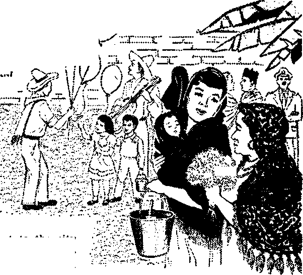

W This Existence All There Is
to Life?
W This Existence All There Is
to Life?

at I Saw on the “Day of the Dead”

Look at Modern India

21
fhs the Nautilus Revolutionized Ocean Travel?

TNF MISSION OF THIS JOURNAL
Newi sources that are able to keep you awake to the vital issues of our times must be unfettered by censorship and selfish interests. "Awake!" has no letters. It recognizes facts, faces facts, is free to publish facts. It is not bound by political ambitions or obligations,- it is unhampered by advertisers whose toes must not be trodden on,- it is unprejudiced by traditional creeds. This journal keeps Itself free that it may speak freely to you. But It does hot abuse its freedom. It maintains integrity to truth.
“Awake!" uses the regular news channels, but is not dependent on them. Its own correspondents are on all continents, in scores of nations. From the four wrr.W!, cA tt.e 'iWt c>Ti-lfrie-romes reports come to you through
these columns- This journal’s viewpoint is not narrow, but is international. It Is read In many nations, in many languages, by persons of all ages. Through its pages many fields of knowledge pass in review—government, commerce, religion, history, geography, science, social conditions, natural wonders—why, its coverage is as broad as the earth and as high as the heavens.
“Awake!" pledges itself to righteous principles, to exposing hidden foes and subtle dangers, to championing freedom for all, to comforting mourners and strengthening those disheartened by the failures of a delinquent world, reflecting sure hope for the establishment of a righteous New World.
Get acqUainted with "Awakel" Keep awake by reading/’Awake!"
Hfl Im.IB MM PI mi
PUBLISHED BY
WATCHTOWER BIBLE and TRACT SOCIETY OF NEW YORK, INC. j 17 Adame Street Brooklyn 1, N-Y,, U.S.A,
N. U. Knokr, Grant Suiter, fleeretari/
Five cents a copy
Printing this issue: 2,850,000
4tAwi*®!” is is the faltowfnd W Iasiugis:
Semimonthly—A^rtkaaiw, Danish, Dutch. English, Finnish, French, Gert&im, Greek. Italian, Japanese, Norn-
Portugwsf’ Spanish, Swedish, TagsM
Monthly—Ciny#1^* Indonesian, Zulu.
Yearly subscription rate.i for semiihcmt.hly editions
AaerleSt U.S., HT Adams St., Brooklyn 1, N.Y, $1
Antrana, u peregford fid.. Strathfield, N S W.
Canale, ISO B^d8eland A?e . Toronto Ont
Eni land, 34 Crwen terrace, London W. 2
View Zealand, 61!^ North fid., Auckland. 8 W. 1
SHtfc Africa, F^7ate Bag, Elandstonteln, T*l. 7/-
Mcmthly aMttons cost half the above rata.
R#iiitt*nus for sutacHpHonn should be sent to the office in y<rvr country. Otherwise send your remittance to Brooklyn. Notice of expiration is tent at tout two isRuna before subscription, cxplr*#-
CHANGES of ADDRESS »t«lld retell » thirty day* before ytnr mpyfnfl date, Give is yoar old antf ntv addrets (If peuibJe, yoar old addrm fahef). Write Watchtower, 117 Adami Street, Brooklyn 1, line York, U.S.A.
Entered as second-due mattoi' at Brooklyn, N. Y. ’ Printed in U.S.A
Ybe W1 ^natation eseft in "Awake!” h the Rew World Translatlew of the Holy Scrlptiree. Wbrt tramlatlofli are i«d the foilwing <ynbpl» *JU appear behind W citations;
XS - American Standard Version XT — A11 American Translation X7 - Authorized Version (1611) - J' Darty's version
Du — Catholic Douay weton ED - The Emirbatic piaglott /P — Jewish Publication Son. Le - Isaac Lecser’s Vfiraion
JWo - Janiejj Moffatt's version JSC - J, B. fiotherbanfs version jfeS - Revised standard Version Yg — Robert Young's version
CONTENTS
Is This Existence All There Is to Life? 5 A Visit to the Emerald Isle
What I Saw on the “Day of the Dead” 13
Has the Nautilus Revolutionized Ocean Travel?
“Your Word Is Truth”
Can You Prove Any Old Thing from the Bible?
Jehovah's Witnesses Preach in All the Earth—Italy
Watching the World
21
25
27
29


God We
Trust” may a beautiful
motto, but is it true? Is it true that the United
IN
be
States and its people place implicit trust in the Almighty God as its national motto declares?
On April 18,1958, President Eisenhower spoke to the American Society of Newspaper Editors and the International Press Institute in Washington. In this speech the president spoke of the military strength of the United States and of the new weapons of fantastic power that appall the world. He stated that survival itself demanded American strength, but not one word about trust in God. Yet this nation boasts in its national motto “In God We Trust.” Is it true? ■
Taking the name of God in any fo.rm is a serious business. To his covenant people Israel Jehovah commanded: “You must not take up the name of Jehovah your God in a worthless way, for Jehovah wilj not leave the one unpunished who takes up his name in a worthless way.” The Almighty is not flattered or deceived by meaningless expressions. For our invocations to be acceptable to him they must be sincere and backed up by right works. Jehovah’s interest in our reference to him is conditioned by the extent to which we allow ourselves to be governed by his will. He is a God exacting exclusive devotion. Empty phrases, especially those with his name attached to them, are disgusting to him. —Ex. 20:7.
Ancient Israel was God’s chosen nation. But when that nation began professing one thing and doing another, it ran into serious trouble. With their mouth they boasted trust and confidence in Jehovah, but time and again when their homeland was threatened they appealed to surrounding heathen nations for help. They found delight in the mightiness of the horse and chariot and in the legs of man. They neither feared God nor trusted him. Consequently'the nation relapsed into general moral and spiritual decay.
Through his prophets Jehovah rebuked them. He would have none of their sacrifices. His counsel to them was: “Wash yourselves; make yourselves clean; remove the badness of your dealings from in front of my eyes; cease to do bad. Learn to do good; search for justice; set right the oppressor; render judgment for the fatherless boy; plead the cause of the widow.” “He hath showed thee, O man. wftat is good; and what doth Jehovah require of thee, but to do justly, and to love kindness, and to walk humbly with thy God?” Jehovah wanted neither their lip service nor their gift offerings but sincere deeds in keeping with his divine will. But when Israel failed to heed his wise counsel, Jehovah disowned them completely.—Isa. 1: 16,17;Mic. 6:8, AS.
Today, when crime and corruption have gone to seed, when divorce and delinquency are on the rampage throughout the nation as never before and when almost everybody is out to do what is right in his own eyes, who among these is deeply concerned about the will of God or trusts in Him? In this era of missiles and rockets, of stockpiles of nuclear bombs and cries for more and more scientists, what nation in this world there that can honestly be said to put its trust in the true God, Jehovah? Who is there to deny that they are trusting in their nuclear weapons for survival?
It is an undeniable fact that the United States as well as the rest of the world is in great fear and without peace. Yet the Holy Scriptures tell us that “abundant peace” belongs to those loving God’s law and putting trust in him, which is conclusive proof that the nations have not made Jehovah God their trust. Their mottoes are empty professions.
In 1907 President Theodore Roosevelt objected to the use of the motto “In God We Trust” on coins. He said: “I might have felt at liberty to keep the inscription had I approved. . . . My own firm conviction is that such a motto on. coins not only does no good but positive harm and is in effect irreverence, which comes close to sacrilege.”
When the California state Senate rules committee Was considering legislation to adopt the motto “In God We Trusty as the official state motto of California, former Governor Culbert L. Olson of California went before that group and vigorously protested. He said: "It is not true that our state or its people trust God as this bill declares.” He argued that half the people in the country do not attend church. How, then, can we say they trust in God? Other individuals objected to the new national motto, stating that it violates the spirit of the First Amendment to the Constitution of the United States. Some called the motto “a meaningless political gesture, reeking of hypocrisy.”
Rather than trusting in God, Carlyle Marney, pastor of the First Baptist Church at Austin, declared that modern America’s trust was in a “new kind of padded cell” made up of locks, burglar alarms, pistols, railroad detectives, insurance companies, bank vaults, credit ratings and retirement plans. The pastor said that God no longer is “standard equipment” for millions of Americans. He has become a “great accessory” to whom there is little occasion to turn, except when one wants to get—or forget, he said.
The motto “In God We Trust” obviously does not reflect the true faith of the nation. It may be a beautiful motto, it may sound nice, it may even give the nation a clean outward appearance, but it does not speak the truth. Trust in God must be evidenced by right works, moral health and spiritual prosperity. Jesus rebuked the scribes and Pharisees, calling them hypocrites because they cleansed “the outside of the cup and of the' dish, but inside they are full of plunder and immoderateness.” First let nations cleanse themselves of their crime, corruption and immorality and Aim to his kingdom by Christ, and then let them declare their trust in God. Otherwise, their mottoes that implicate God are a taking of his name in vain.—Matt. 23:25, 26.
You
thought then about how precious existence is. But as you grow older and the end of your life span comes within sight your attitude changes,
want ever so much to extend that
Doe* death permanently terminate your conscious existence? Or is it possible to live again after death?
HEN the Italian liner An-_ . drea Doria collided with tockholm on July 25, 1956, the chief desire of its alarmed passengers was to save their lives. None relished the thought of going down with the ship to a watery grave. So anxious were many to escape death that they did not stop to clothe themselves properly but joined the frantic scramble to the ship’s listing deck clad only in their underclothes. They valued their life. They wanted to live.
A person may respond indifferently when someone speaks with him about death and the normal desire to live, but when he is faced with death, as were the passengers of the Andrea Doria, he manifests an entirely different attitude. He fight^to save his life.
A normal person has no desire to die. If he should contract a sickness that could cause death, he is willing to spend all that he has on doctors^and hospitals in order to be cured. That desire for life does not diminish with age but increases.
Your life span is like a road that stretches out before you. When you are young it is very long and disappears into the distance of the future. You give little road or to be at the beginning of it once again. You want to continue living, even in this corrupt and war-torn world. The eighteenth-century writer Samuel Johnson expressed the feeling well when he penned these lines:
“Catch, then, oh! catch the transient hour, Improve each moment as it flies;
“Life’s a short summer—man a flower; He dies—alas! how soon he dies!”
Attitudes Toward a Future Life
There are many materialistically-minded persons who contend that this existence is all there is to life. When death comes, either by accident or by a person’s reaching the end of a normal life span, they believe his existence is permanently terminated. This brief moment in the great stream of time is, to them, all the existence a person will ever have. Like a flower a person’s life blooms, fades and dies, never to bloom again.
The famous agnostic Bertrand Russell said: “For my part, I do not think there is any good reason to believe that we survive death.” When speaking about the belief of life after death, evolutionist Le-comte du Noiiy expressed the opinion that men were trusting in their imagination: “He knows that he will never see the loved ones again-on this earth, but he refuses to believe that they cannot live somewhere else. So he invents another life, he creates another world in which, some day, they will meet again."
A large number of the world’s people refuse to believe that this existence is all there is to life. They insist that death is not the end of a person’s conscious existence but is a door to another world and to a much grander life. They contend that man has an immortal soul that survives death. The well-known poet Henry Wadsworth Longfellow expressed this view when he wrote: “There is no Death] What seems so is transition.”
Although these people look upon death as a friend that ushers them into a better life, they do not welcome death when faced with it. They fight with all their might to continue their present existence.
Belief in the immortality of the human soul was common to the ancient pagans and is common today outside Christendom as well as inside. It has been the cause of many superstitions and strange religious beliefs and practices. Because of it many professed Christians have embraced the pagan belief of eternal torment in a fiery hell for wicked souls. Others have adopted belief in the transmigration of the soul.
More to Life than Present Existence
The view that death terminates a person’s conscious existence and the view that life is possible after death are both correct to a certain extent. The Bible does not uphold the pagan belief that the human soul is immortal. Instead it plainly states that “the soul that sinneth, it shall die.” (Ezek. 18:4, AS) It confirms the argument that the conscious existence of a man ceases at death. At Psalm 146:4 it says that when a person dies “his thoughts do perish.” Also at Ecclesiastes 9:10 we are told that the dead cannot work, cannot devise things, cannot possess knowledge and cannot have wisdom. In other words, the living, conscious creature has ceased to be. He does not have an immortal soul that separates from the body at death and permits him to continue having a conscious existence. He returns to the lifeless dust and is no more.
But, when the curtain of death drops with such finality, that does not mean a person’s existence cannot be renewed. The fact that it is possible for a person to return to life by resurrection is the basis for hoping in life after death. Jehovah God, the Creator and Source of life, can renew the life of a person just as easily as he created living humans in the first place.
It was God’s purpose in the beginning that man should never die. Adam would still be living today if he had been obedient. His willful disobedience lost life for himself as well as his descendants. We have inherited death from that first man, just as some diseases may be passed on from one generation to another. At Romans 5: 12 it is written: “Through one man sin entered into the world and death through sin, and thus death spread to all men because they had all sinned."
In spite of this seemingly impossible situation we are in because of our first parents, death does not have to be final. Because of Jehovah’s undeserved kindness we have the hope of a resurrection from the dead. “1 have hope toward God, which hope these men themselves also entertain, that there is going to be a resurrection of both the righteous and the unrighteous.” (Acts 24:15) With this hope before us there is no need for us to look upon death as the permanent end to our existence.
There is no reason to think God will bring back to existence persons who flouted his written laws and in every way acted wickedly in his eyes. The resurrection is not for them. For such persons this present existence is all there is to life. Their death is the permanent end of them. “For evildoers themselves will be cut off, but' those hoping in Jehovah are the ones that will possess the earth.’’ (Ps. 37:9) Such evildoers are permanently cut off from life.
It matters not how long a person has been dead. That does not lessen God’s capability of renewing his existence by resurrection. The body that is resurrected is not the one that was buried. That body long ago disintegrated to dust and its elements were absorbed by other living things. All that is necessary is for the great Life-giver to fashion a new body from the elements in the earth and to impress upon that body the thought and personality pattern of the dead person. That pattern is retained in God’s memory. The consciousness of the resurrected person will therefore be the same as before he died.
A small number of those that are resurrected are given a new existence as spirit creatures. They receive a resurrection to heavenly life. It was with regard to this heavenly resurrection that the apostle Paul spoke when he said: “It is sown a physical body, it is raised up a spiritual body.” (1 Cor. 15:44) But this happens only to a select group who are chosen to rule with Christ as kings. The majority of those who are raised from the dead will experience a new existence on earth as human creatures. They will have the privilege of being among those who inherit the earth by becoming its eternal inhabitants. “For those being blessed by him will themselves possess the earth.”—Ps. 37:22.
These resurrected ones will not be brought back to live in a wicked system of things as we have today. The wicked will have been removed from the earth by the hand of God at his battle of Armageddon. “Therefore wait ye for me, saith Jehovah, until the day that I rise up to the prey; for my determination is to gather the nations, that I may assemble the kingdoms, to pour upon them mine indignation, even all my fierce anger; for all the earth shall be devoured with the fire of my jealousy.” (Zeph. 3:8, AS) This corrupt earthly system with its wicked invisible rulers will be swept out of existence, devoured as by fire.
The earth will come under the authority of God’s chosen King, Christ Jesus. He will rule mankind in justice and peace. Under his direction the earth will be made into one big, beautiful garden. It will be at that time that the prophecy at Isaiah 32:16-18 will have a fulfillment earth-wide. “And in the wilderness justice will certainly reside, and in the orchard righteousness itself will dwell. And the work of the true righteousness must become peace, and the service of the true righteousness quietness and security to time indefinite. And my people must dwell in a peaceful abiding place and in residences of full confidence and in undisturbed resting places.” This is the world to which the dead will be raised. They will come back to a much more desirable existence than what they had before dying.
Under the just rule of Christ, God’s original purpose for man will be fulfilled. The earth will be populated with perfect, righteous humans. Adamic death will no longer have power over them. They will be given the gift of “life to time indefinite.”—Ps. 133:3.
Eternal Life Is Possible
If it were not. for the ransom sacrifice of Christ, eternal life would not be possible for man. Neither could the dead be resurrected. This present existence would be all there is to life.
It was out of undeserved kindness that Jehovah provided his Son as a ransom sacrifice that could release mankind from the curse of Adamic sin and death. “The love is in this respect, not that we have loved God, but that he loved us and sent forth his Bon as a propitiatory sacrifice for our sins.”—1 John 4:10.
There was no way for man to free himself from the effects of Adam’s sin. Like $n inherited disease, he had something that he could not remove by himself. He needed outside help. Jehovah God was the only One who could provide that help. sHe did this by transferring the life of his heavenly Son to the earth that he might be bom as a perfect man, an equal to the first perfect man, Adam. The sacrifice of his perfect human life and the right thereto made possible the nullifying of the effects of Adam’s sin. “For all have sinned and fall short of the glory of God, and it is as a free gift that they are being declared righteous by his undeserved kindness through the release by the ransom paid by Christ Jesus.” (Rom. 3:23, 24) ’By means of release by it man can gain a righteous standing with God. It opened the way for man to regain what Adam lost for man.
How to Gain Eternal Life
Since Christ’s ransom makes it possible to be blessed with a resurrection from the dead and even receive the gift of eternal life, we can say that the short existence we now have is not all there is to life. There can be much more if a person manifests a keen interest in Jehovah’s purposes and has a hungry desire for an accurate knowledge of his written Word.
It is only by gaining knowledge about Jehovah God and his purposes that we can have a basis for building a firm faith. Faith is essential for his approval, which, in turn, is necessary for a resurrection and the gift of eternal life. It is written: “Moreover, without faith it is impossible to win his good pleasure.” (Heb. 11:6) Jehovah’s witnesses are doing their utmost to' help people build this necessary faith. They spent over one hundred and ten million hours last year helping people gain the Scriptural knowledge that is the basis for it.
Once a person has gained an accurate knowledge of God and his purposes he must be obedient to that great Life-giver. He must not willfully violate the divine principles and commands set down in the Bible. If men attempt to force him to be disobedient, he must steadfastly refuse to break his integrity. He must take the po* sition expressed by' the apostle Peter, who said: “We must obey God as ruler rather thanmen."—Acts5:29. .
A vital requisite for life is undefiled worship of Jehovah God. The worship of him must not be corrupted by the pagan practice of venerating images or by pagan doctrines of soul immortality, eternal torment and so forth. He must be worshiped in spirit and in truth. Because those in the New World society of Jehovah's witnesses worship him in this manner they can look forward confidently to more than the present existence.
Service of the great Life-giver is also required to gain his good pleasure. It is an expression of love for him and is actually part of one’s worship of him. “For with the heart one exercises faith for righteousness, but with the mouth one makes public declaration for salvation.”—Rom. 10:10.,
Follow the multitudes who are now streaming into the New World society and are embracing the prospect "of eternal life in human perfection. .Share their confidence in a resurrection from the dead. Because of their faith in God’s written promises they know that there is more for them in life than this present short existence.

ERHAPS you are not familiar with the name Eire, but you know Ireland. Eire is Ireland in the Irish language. Few people have not heard of the many places in Ireland made famous in story and song. Such places as Galway Bay, Tralee, River Shannon, the Mountains of Moume and the fair city of Dublin have had their praises sung world-wide for generations. The Irish people love to sing and the Irish folk songs are loved by the people of many nations. What is Ireland like? To the tourist seeing Eire for the first time, he is struck by the green appearance of the land. Yes, it is truly the “Emerald Isle.” Much of this is due to the dampness of the climate. Two weeks without rain in Ireland will cause some farmers to speak of the drought. Many jokes are told concerning the weather in Ireland, and the Irish still chuckle over the one attributed to an American GI during World War II. “Ireland,” he said, “would be a wonderful place if they would build a roof over it.”
A beautiful land, Eire has much to attract the tourist. The interesting bog country, the lakes of Killarney, Blarney Castle with its famous Blarney Stone, the mountains and countless beautiful bays are only a few items well worth seeing when visiting the Emerald Isle. The people live simply and the standard of living would be considered low by people of many nations. The economic situation in Ireland at the present has led to much unemployment and emigration.
Although what is said of one part of Ireland can often be applied to the entire island, the purpose of this article is to discuss only that portion known as Eire or the Republic of Ireland. Eire is made up of twenty-six counties, while Northern Ireland consists of six counties. These six counties elected to remain with Great Britain when independence was granted to Ireland in 1922. People r£fer to the Protestant North and the Catholic South, showing that basically the split is religious. This division has aroused the nationalistic ire of some Irish and as a result the authorities are constantly plagued with border incidents resulting in loss of life and property.
Usually the Irish people are an easygoing race and are little bothered by such things as punctuality. If you make an appointment with an Irishman for ten o’clock and he does not appear at that time, do not be disturbed, because if he hurries he will arrive at ten thirty. They are amused by the hustling Americans and will tolerantly tell them, “You are in Ireland now; you might as well throw that watch away.”
An indication of this attitude is the nonchalant manner in which they will risk life and limb in traffic. If you visit Dublin and never remember anything but O’Connell Street in the rush hours you have had quite an experience. The picture of Dublin traffic carried away by visitors is a mad race of bicycles, motor scooters, motorcycles, cars, lorries, donkey carts and pedestrians. To cross O’Connell Street at rush hours is an experience never to be forgotten.
Two ladies, tourists, were once observed poised on the sidewalk gazing across this very wide street of careening vehicles. They clasped hands fearfully and one was heard to remark, “Now is where you take your life in your hands.”
Preaching in Eire
Realizing that all people now living are living in a period of judgment and with their lives at stake, Jehovah’s witnesses have not neglected Eire in their mission of preaching the good news of Jehovah’s established kingdom. The witnesses have been active in Ireland for more than fifty years. In September of 1957 a Branch office was established in Dublin, and the work is going ahead under this new arrangement. This is true in spite of the opposition of the clergy.
The Constitution of Eire grants freedom of religion, and people from many lands are watching the activity of Jehovah’s witnesses here because they feel that here is a real test of this constitutional guarantee. Will Catholic Eire permit free exercise of their faith to Jehovah’s witnesses? The opinion of a district justice, quoted in The Irish Times on September 16,1958, expresses the viewpoint of some: “Religion is above the courts, the main business of which is to preserve peace. When men come into an Irish village and provoke the people by foisting their views on them, they are abusing whatever rights they have under the Constitution, which guarantees freedom of religious worship. Such action is bound to draw down the rod of the people whose hospitality they have received.” And with that the defendants, who had beaten some religious missionaries and kicked their Bible down the street, were absolved.
Incidents of stoning and violence to the witnesses by priest-led mobs have caused concern among many of the Irish people who cherish the liberties they fought for. As I write this I have at hand a report from three young ministers of Jehovah’s witnesses who were chased from a small village near Limerick. The parish priest and the curate led the group. The priest used physical force in ejecting one of the ministers from the Garda (police) Station while the Jaw officers stood by refusing to interfere and only saying, “Now, Father; now, Father.” Eire is obviously not a police state, but thinking people will assure you that it is a priest state.
In contrast with this attitude many of the Irish people are humble and conscious of their spiritual need. Their joy is great when they hear the truth from the Bible and are freed from this fear of clergy. It is difficult for many to appreciate God’s Word, because most have practically no knowledge of the Bible. Many who have attended church regularly all their lives will not recognize the Bible when it is shown to them. Some will confess that they have never seen one. It is a real thrill to attend meetings of Jehovah’s witnesses and watch these humble people diligently searching their Bibles as they follow the points of Bible truth being expounded by one of Jehovah’s ministers.
IN THE NEXT ISSUE
* The coronation of Pope John XXI11 produced not only a new pope but also notable
|
changes in the papacy. Read about it the arttaVe “A tAe'w Pepe |
in | ||
|
* Did you |
know |
that, with the exception |
of |
|
Greenland, |
nine |
tenths of all Arctic land |
is |
snow-free in August? that snow falls in the tropics? that ice is piled up to 10,000 feet thick in the Antarctic? Learn about these and other fascinating "Wonders of the Frozen World.” See the next issue-
# Are you responsive to warnings or do you needlessly risk your life? Millions have died because “they took no note.” Read about it, and benefit from it, in the next issue.
It takes real courage and a love for God for the Irish people to take their stand for true worship. A young man, an ardent Catholic and a very active one, spent hours talking to one of Jehovah’s witnesses in an attempt to convert him to the Catholic faith, but was himself impressed by the logic of the Scriptures. In spite of the opposition of his family, neighbors and priests, he was immersed at a circuit assembly after dedicating his life to Jehovah.
Attempts were made to have his employer fire him, but being a fair-minded Catholic he refused. Priests and nuns made repeated visits to his home, and his uncle advised his mother to have the young man locked up since he evidently had lost his sanity. In December at a circuit assembly in Dublin this uncle, a former Catholic, laughingly related this after he and the mother and sister of this young brother were immersed in symbol of their dedication to Jehovah.
One of Jehovah’s witnesses called at a house but was chased from the yard by a woman who wanted nothing to do with him or his message. Some months later this same witness, manifesting a loving interest in the welfare of his neighbor, called again at this same house. The man came to the door and after listening for a time said he was not interested because he believed like Mr.----. The witness of Jehovah said, “I am Mr.----
A study was started with this man and his family, including the wife, who had previously chased the minister from her door. They have progressed rapidly in their knowledge of the Bible. The family was very much impressed by the fact that this man was interested enough in them to call at their house again in spite of the treatment he had received previously. , The clergy forbid * their flock to talk to Jehovah’s witnesses and to read their literature. They fear the work of Bible education carried on by this group. An admission of such fear was published in the Watchman magazine, Vol.
XXIII, No. 44. This magazine is published by the Dominican Students in Dublin. One paragraph reads:
“It is easy enough, then, to see why the church founded by Luther has divided over and over again into numerous smaller sects, each one differing from the parent body on one or many points of doctrine. This is particularly true of America, where hundreds of these societies have arisen— each claiming, naturally, to be the true church of Christ. Most of them are comparatively small and unimportant, but the Jehovah Witnesses are a frightening exception. Of many sects this is one of the most aggressive and spectacular, and undoubtedly the most vigorous in its propaganda.”
The work of Jehovah’s witnesses may be frightening to some, but to those who have a desire to know -God it is a wonderful work. People in Eire are responding to it and sharing in it. As a result, each month over 200 ministers of Jehovah are engaged in calling at the homes of the people in Eire and in a spirit of love are offering to help them to come to know Jehovah and his wonderful purposes for mankind.
JW> TICKET
In London the usherette at a cinema discovered a shadowy figure occupying an" aisle seat. Knowing that she did not collect a ticket for that seat, she tapped the seat's occupant on the shoulder. It barked. Shrieks from the usherette speedily brought the theater’s manager to the scene of the uproar. After determining that the figure was indeed a dog, the manager, using the identity tag on the collar, telephoned the dog’s owner. The owner soon arrived, and the manager explained that the dog had no ticket and “we simply can’t have the dog taking up a seat when we’ve got a queue of customers waiting outside.” “He loves the theater,’’ said the dog’s owner with profuse a pologies.

“Sneaked into the ballet the other week to see ’Les Sylphides.’”
UA'COWEO BULL
<L Near Whitewater, Wisconsin, a farmer's bam caught on fire. The farmer rushed inside to free his livestock. After liberating thirty-four animals, he was almost overcome by the smoke. But he managed to release his herd sire. Hanging on tightly to the animal, the farmer hoped the cranky old fellow would not be paralyzed by fear and fire. Uncowed, the bull led the farmer through smoke and flames to safety outside.
SHOW STEALERS
<L At the Poznan Trade Fair in Poland last June, thirty-nine countries packed their products into the fairground. More than 500,000 persons visited the United States pavilion, where they saw productionline methods and- color television. The star attraction? Ten little pigs. Some persons remained for hours, watching one pen of piglets with a new-style mechanical feeder and another family with an old-style sow.

CLASSICAL COWS
C A farmer in Natal, South Africa, set up a phonograph near the door of his barn and played Chopin’s “Grande Valse Brilliapte.” Every cow within 200 yards, reported the farmer, stopped feeding and listened attentively. However, when he put on a recording of a modern band, his bovine audience lost interest and resumed feeding.
“REVENGE”
C. Under the above title the Manchester Guardian Weekly of October 2, 1958, reported: “Revenge, especially the revenge of a disappointed lover, takes curioUs forms, but few as fantastic as the revenge of the disappointed fiancd of Frau Johanne Wehnisch, who runs a small but until recently very popular cellar restaurant in Berlin. A few days ago a German court passed a suspended sentence of five months’ imprisonment on Frau Wehnisch for contravening hygiene regulations. The evidence for the prosecution was supplied by her former intended, who told the Court that instead of washing the dishes in her restaurant Frau Weh-nisch had them licked clean by her dog.”

INCISIVE ACTION
<. Four miners in Northern Rhodesia recently went on a fishing trip up the crocodile-infested Kafue River. The presence of crocodiles did* not disturb the fishermen until their boat bumped into a huge hippopotamus. This mammoth mammal, in no mood for impudence, took Incisive action: it bit a hole through the galvanized iron side,of the boat at water level. In desperate straits, the men bailed and paddled frantically and just managed to reach the nearest shore.

What I saw on
THE “DAY OF THE DEAD” > J J
\ \l / I
BY "AWAKE!” CORRESPONDENT IN MEXICO
IT WAS a pleasant H-^\fall day when I awoke on Sunday morning, November second. I quickly dressed and went to breakfast. Today was the “Day of the Dead” in all of Mexico and, being in Mexico City, I thought, “Why not ride out to the city cemetery to see what this religious holiday is like?” So after breakfast I took a bus that in a few minutes left me at the.
entrance to beautiful, Chapultepec Park, Mexico City's main park, which covers many acres of wooded land and at the far encj of which extends the Dolores Cemetery, the principal one for all of Mexico City. Since the sun was shining warmly by now, it was an enjoyable walk through one corner of the park to the famous flower market. The park was filled with people going the same direction.
Everybody was buying flowers, armloads of them, mostly orange marigolds, which one lady told me were called floras de cempasucliil, a name the Indians had given them. They are especially associated with the “Day of the Dead.” The traffic was unusually heavy for a Sunday morning, taxi after taxi and private cars passed by, all headed up the hill toward the graveyard, each one filled with family groups, all with large bunches of marigolds.
Now, which would be the best means of transportation to finish the short trip up
J
the hill? It would take just about ten minutes by bus, but all the buses were packed. Taxis are always a cheap means of transportation in Mexico City, but not an empty one was in sight. There across the street was a long line of people and a bus marked “Dolores Cemetery Special” stopped for them. So I stood in line with the rest of the people. They, too, were carrying flowers and here ! noticed something else: they had buckets and trowels. The whole family was there, from grandma to the little one carried in his mother’s rebozo (stole). Several special buses pulled in, loaded their passengers and were on their way. Then it was our turn; the bus filled up quickly, with about fifty of us standing and another twenty seated along the sides.
As we made our way up the hill through the traffic I noticed other people walking along carrying flowers. It was easy to see that everyone had one place in mind today.
Was this, the “Day of the Dead,’* a time of mourning, or was it a day of revelry and feasting? It seemed that there was a festive spirit instead of one of sadness.
Ai. the Cemetery
What a crowd there was at the entrance to the cemetery! The traffic policemen had the crowd held hack by ropes until the signal was given to cross the wide avenue. Policemen were at the gates as the people entered. Well, here I was inside the gates and the large chapel was the first thing that caught my attention. There was a man kneeling with his children, a large bunch of flowers in his arms. It seemed he was asking a blessing on the flowers. Over near the wall in the paricing space was an ambulance and a small first-aid tent Several paths led off among the tombstones. I took the one in the middle. Here to my left were two Catholic nuns chanting praters and accepting collections, for which they gave, in turn, a tiny picture of a saint.
Soon I came to where the path made a complete circle, and around the circle were larger and more impressive tombs. This circle is known as the Rotunda of Illustrious Men, It seemed strange to me to find that the world-famous Mexican painter Diego Rivera, a known Communist, was buried here and a large, prominent monument erected to his honor. But then I remembered that the Mexican government, in spite of Mexico’s being a Catholic country, does not let the church rule in government, and therefore even a Communist is recognized by the government as beneficial to the nation.
Everywhere people were busy scrubbing the marble tombs with soap and water or removing the weeds from the poorer graves. Now I could see why they had brought their buckets and trowels. They had to carry water quite a distance from the public faucets to the graveside. Little boys with buckets kept offering to go along with me to clean off the grave they thought I was going to visit or to carry water for the flowers.
By now the paths were crowded with people but, as I noticed before, very few were grief-stricken and not all wore the traditional black clothing worn in times of mourning. Here and there groups around graves were repeating prayers in low voices. Then I saw a priest dressed in his long flowing skirts accompanying a humbly dressed couple to a grave. He sprinkled the grave with “holy water” and spoke some words in Latin—all in about thirty seconds—after which the man took out his billfold and gave the priest a ten-peso bill. Immediately a lady stepped up and asked the priest to accompany her to another grave.
Here, around a curve in the path back among the trees, a larger group of people were gathered. What was this? I approached to find out. It was the tomb of a Jesuit priest and the people were waiting to walk down the steps and out again, I wondered if they were doing this to receive some special blessing. People were even kneeling and praying around the wrought-iron fence that enclosed the tomb.
By now I had walked a long distance and still there was no end to the cemetery. I was wondering just why so many people came to the graveyard this day, so I decided to start a conversation with a lady who was standing near a grave waiting while one of the little boys cleaned off the weeds. “If takes a lot of work to clean off all the weeds, doesn’t it?” I asked. “Yes, it does. But I haven’t been here for two years and that’s why there’re so many.” “Oh, you Jive in another part of Mexico?” I offered. "No, I live in a smalt town not far from Mexico City, but it takes quite a while to make the trip. I came today because I just don’t know whether my dead mother is aware that I make a visit to her grave or not. I don’t know if she feels lonely when I don’t come on the Day of the Dead or if she can feel anything at all or if she even knows.” So that was the reason; now I understood. These persons thought that maybe their dear departed ones were nearby in a spirit form and could receive some comfort from their visit.
Just Like a County Fair
But as I left the graveyard by a side entrance what I saw there made me wonder if all the thousands of visitors who had come this day had the same sincere motive. What was that crowd of people doing over to the right of the entrance? When I came closer I could see that they were buying and eating barbecued meat that they wrapped in tortillas and ate along with a native fermented drink called pulque. There were stands with different kinds of food and soft drinks all along the outside wall of the cemetery, and there were picnic groups on the grass along the roadside. Balloon peddlers passed by blowing their familiar whistles; that announced to little children that a special treat was in store for them. Cotton-candy vendors were also doing a good business. One lady came by offering, for a peso, cardboard skeletons dressed in troubadour suits; when she pulled a string they danced as they played on a small guitar. No sadness here; everyone was having as good a time as if they were at a county fair. All that I saw here was very shocking to me. Instead of all this, I had expected to see a religious observance of this day. According to what different persons had told me about former years, this eating just outside the cemetery grounds must have originated with the practice of having eating and drinking parties right on top of the graves, probably with the idea in mind that they were guests of the dead person. It seems that the government has prohibited this now.
I made my way through the crowd to the bus stop and passed by a little old lady who was asking for money for the saint she carried in her arms. People were depositing coins in a slot in the small wooden box that she held in her hand. Across the street from the graveyard I noticed that the stores where marble tombs were made and sold had been converted by the owners into temporary food-and-drink stands and the air was filled with the voices of competitors shouting their wares, A little girl stood right in the way of the passengers as they got off the crowded bus selling flowers to the ones who had not had time to buy them at the marhet. As soon as the bus was empty I climbed on and paid my twenty centavos and sat in the empty seat near the driver. That had been an interesting morning, but a tiring one too.
As we returned down the hill I was thinking about how Catholics in other parts of North America or Europe would be surprised or even shocked at the things I had seen the Catholics doing here. I also thought about the sincere lady by the graveside and how eagerly she had listened while I explained to her that God’s Word assures us that the dead are unconscious and not lonely at all, that they are asleep in their graves and await a resurrection in Jehovah’s new world of righteousness. Then, scenes that I had witnessed this day will never be seen again, because there will be no more death and hence no more need for cemeteries.—Eccl. 9:10; John. 5:28,29; Rev. 21:4.
&*•
BAY
■ ^BENGAL
*\p *.
wide as o accurate knowledge about many of its places is the exception rather than the rule. Especially does this seem to be the.
case regarding India, which is so far away from where most readers of Awake! live. Today she is facing the greatest challenge of her eleven-year existence as a free and independent nation. Due to her size and location the world has become keenly interested in knowing more about her.
India is largely a triangular-shaped peninsula in the southern part of Asia. She has a maximum length from north to south of some two thousand miles and a maximum width of seventeen hundred miles.
Her area of 1,266,900 square miles makes her earth’s seventh-largest country; being exceeded only by the U.S.S.R., Canada, China, Brazil, the United States and Australia. With her 387 million inhabitants she ranks second only to China in population.
Together with Pakistan on the west and Nepal on the northeast India forms the “subcontinent of Asia,” so called because of its vastness and its geographical oneness. Mountains in the west, cast and north, chief of which is the Himalayan range, separate this subcontinent from the rest of Asia. So much so, in fact, that no railroad connects India with the rest of Asia. Bordering the Indian peninsula on the west is the Arabian. Sea, on the east the Bay of Bengal, while her southern tip extends into the Indian Ocean. India’s chief rivers are the. Indus, the Brahmaputra and the Ganges.
India has the world’s biggest alluvial plain, the Hindustan. In her forests, which cover an area the size of the state of Texas, are to be found 450 different species of trees. Her wildlife includes the tiger, together with other members of the cat family, the monkey, cobra, bear, wolf, water buffalo, wild hog, elephant and rhinoceros; also many insects and rodents.
India lies entirely in the southern portion of the Northern Hemisphere. Her latitude corresponds to the area that extends from the southern part of the United States to the northern lands of South America. Except for her northerly regions India’s climate is “monsoon-tropical,” so named because of her tropical seasonal rains, the monsoons. Her year has three seasons; cool from October on to March, which begins the hot and arid season, and which lasts until the rainy or monsoon season begins sometime in June.
India’s multitudes live in some seventy cities, more than 3,000 towns and upward of 550,000 villages. Exceeding a million in population are the cities of Bombay, Calcutta, Hyderabad, Madras and Delhi (including New Delhi).
Politically, India consists of fourteen states and seven centrally governed territories. Before her independence, achieved in 1947, she was divided into 217 princely states that ranged in size from one square mile to as large as Italy. India has no small language problem with her 782 languages and dialects. Of these, fourteen, mentioned in the Constitution, are spoken by upward of five million persons each; some fifty are spoken by more than 100,000 but less than five million; and the remainder, more than 700, are spoken by less than 100,000 persons each.
As for India’s religious complexion, 85 percent are Hindus, 10 percent Moslems, 2.3 percent so-called Christians, and 1.7 percent Sikhs, the remaining one percent accounting for all others.
Agriculture and Industry
Of India’s millions 70 percent depend upon agriculture for a livelihood. In view of the primitive farming methods employed by most of her people it is indeed remarkable that India should be the world’s- largest tea grower, producing about half of the' world’s supply, and should rank second as regards cotton, jute, rice and tobacco. She also ranks high as producer of wheat, peanuts, sugar cane and oil seeds. India has one fourth of the world’s cattle, 220 million, and 110 million sheep and goats. She irrigates fifty million acres, more than any other country, and is steadily increasing this amount.
India at present produces upward of 3,500,000 kilowatts by means of her hydroelectric plants which, however, is but one tenth of her capacity. She is the world’s second-largest producer of motion picture film
(as regards footage) and the third-largest user of radio frequencies, having twentyseven radio stations. And in spite of her high illiteracy rate she has a large press: some 6,000 periodicals, of which 445 are dailies.
India is trying hard to improve the lot of her multitudes, their annual per capita income being but some $60. To this end she inaugurated a Five Year Plan in 1952 and another in 1956. To realize the objectives of these, India has received much help in the way of loans, grants and technical advice from a number of lands, including the United States,. Canada and Great Britain, also Russia.
Indicative of India’s progress in industrialization is her famed Tata empire, which, among other things, has the world’s largest self-contained steel and iron works. And most ambitious of all is her Bhakra Dam in the state of Punjab, which will eventually cost $400 million. At 740 feet, it will be the world’s highest straight gravity dam, will produce 900,000 kilowatts of electricity, and is expected to irrigate ten million acres of land. This project has already wiped out a 35,000-ton grain deficit in the area and Increased cotton production 30 percent.
All this progress, however, is not without its setbacks. Currently India is feeling the strain of her ambitious second Five Year Plan, making it necessary for her to obtain loans repeatedly. Thus in June of 1958 the United States Export-Import Bank loaned her $150 million, and in August five nations, the United States, Great Britain, West Germany, Canada and Japan, loaned her $350 million. Early next year she will need an additional $500 million and upward of $1,000 million more in 1961.
Will She Make It?
According to Nehru, “India is one of democracy’s chief testing grounds.” The goal of her government is to keep her democratic institutions, preserve order, improve the economic lot of her peoples and take a neutral course as regards East and West. (Because of her size and position and neutral policy she has been mentioned by some as a fit candidate for the United Nations seat now occupied by Nationalist China.) India’s leaders apparently have no desire to resort to a military dictatorship as did her neighbors to the east and west of her. And while one of her southern states, Kerala, has a Communist government, elsewhere communism is making little headway, no doubt due to the Hindu mentality and philosophy. This very mentality, though, poses one of India’s major obstacles. As Nehru expressed it: “There is hardly a country where the gap between ideals and performance is so great” as in India.
Then too, there is much friction between India and her Moslem neighbor over such thorny questions as jurisdiction over the State of Kashmir, water rights, property of evacuated refugees and trade relations. Mainly because of this condition India devotes 40 percent of her budget to military purposes.
India’s Uphill Fight
In her efforts to improve the economic and cultural level of her peoples while at the same time holding on to her democratic institutions India has had a real uphill fight. And no wonder, when we consider the obstacles in her way: poverty, illiteracy, superstition, caste and a fatalistic religion; to which must also be added her climate, in that her rainfall is almost wholly limited, to the monsoon season, from mid-June through September.
India, with her 387 million inhabitants, is the world’s largest democracy. In the words of her Constitution, India “is a Sovereign Democratic Republic with a parliamentary form of government based on universal adult franchise.” Even though some 80 percent of her people are illiterate, she has been able to hold the world’s largest free elections. How was India able to do this? By using colored sticks and ballot boxes bearing symbols for the various parties; such as a pair of yoked bullocks for the Congress Party (the one in control since India’s independence), and a sickle and ears of com for the Communists. Of course, to acquaint India’s millions with the issues required a vast amount of traveling and public speaking on the part of the various candidates.
Among the unique obstacles the Indian government has had to face is caste. While, with its four basic divisions, its three thousand subdivisions and its untouchables, it might be said to be primarily a religious institution, it nevertheless appears to have its basis in racial prejudice. Thus former United States ambassador to India, Chester Bowles, observes in his book, Ambassadors Report, that he never saw a very lightskinned Indian who did not belong to one of the higher castes nor a very dark-skinned Indian who did not belong to the untouchables.
The government is trying nard to wipe out caste prejudices and, in particular, the stigma of the casteless or untouchability, which it has outlawed. As part of its campaign to wipe out this form of religious prejudice and injustice inspectors are sent to the villages. These summon the untouchables by the beating of 4 drum and then tell them: “In the new India there is no longer untouchability. ... If you wish you can enter the temples ... no man may prevent you. In school your children may freely sit beside the children of your neighbors. . . . You may use the village well . . . and all public places are open to you,” and so on. To drive home the meaning of his words the inspector takes the untouchables to the local temple and next to a restaurant, where they are given a meal at government expense. After some more words of encouragement they are dismissed.
But with what effect upon those enjoying advantages under the caste system? In some places, no sooner have the inspector and the untouchables left than the restaurant owner smashes all pottery and dishes used by the untouchables as hopelessly defiled and thoroughly scrubs his floor and all his furniture with “sacred" cow’s milk to purify it all. However, progress is being made. The vote of the one-time untouchable counts as mucn as that of a Brahman. More and more young people are discounting caste in considering marriage, and lower-caste men are being elected to village councils, the pan-chayats.
Other features of India’s religion also present obstacles to the government’s efforts to improve the condition of her peoples. Thus the All-India Rural Credit Survey reported: “There are two main facts about India: religion and poverty.” Perhaps nowhere else has man-made religion done so much harm to a people, not only spiritually but even materially.
There is an Indian proverb that says: “It is better to sit than to walk, to lie down than to sit, to sleep than to wake, and death is the best of all.” Hindu philosophy looks down on all manual labor and thrift and exalts idleness and contemplation. Its fatalism doubtless accounts for the fact that in so many Indian villages farming methods used today are much the same as they were in the days of ancient Egypt. Nehru has lashed out time and again against Indian youth for making a fetish out of white-collar jobs and looking down upon skilled labor even though it paid much better and was far more in demand and even indispensable for the country’s progress. He has also repeatedly chided his countrymen because of the economic burdens that the religious institutions of cow worship and holy begging represent.
The Rural Development Program
A .vital part of each Five Year Plan has been the Rural Development Program. It has accounted for some of the most striking progress India has made in the past seven years in overcoming diseases, illiteracy and ancient farming methods.
The crying need for India’s health and sanitation program can be seen from the fact that one fourth of all babies die under one year of age; that the average life span is but twenty-seven years; that in the course of a year upward of a million persons die from malaria and 100 million are smitten with it; not to say anything about the tolls taken by cholera, smallpox, leprosy and elephantiasis. One reason for this has been that most village wells were nothing but scum-covered open ponds.
During her first five Year Plan 42,000 new wells were dug, 65,000 were renovated and 110,000 latrines, or public toilets or privies, were constructed. Millions of mothers were taught basic essentials of child care, and family planning was encouraged so as to cut down the phenomenal birth rate.
Attacked also was India’s illiteracy of 82 percent. The goal is free and compulsory education for all children between the ages of six and fourteen years. The first Five Year Plan saw a 20-percent increase, so that now 35 percent of these are attending school.
Millions of adults are learning to read and write at 41,000 educational centers whose slogan is “each one teach one.” Additionally, the alphabet of the local dialect is posted on a chart in the square of each village. While much progress has been made, a government report complains of insufficient enthusiasm for this feature of the Development Program as well as of some lapsing into illiteracy.
This program is also rapidly establishing democratic rule in the villages. Five (or more) older men of influence are elected to the village panchayat to direct its affairs and judge minor matters. One good result of this has been to minimize caste differences.
But, above all, the Rural Development Program has attacked poverty by teaching villagers imprbved farming methods. Usually a farmer has many small patches of land, each surrounded by a wall or hedge. Such an arrangement is wasteful of both land and the farmers’ time as well as inviting petty squabbles. To eliminate this waste, farmers have been encouraged to consolidate their holdings. To make their efforts more productive they have been supplied with improved farming equipment, good seed, pedigreed animals, fertilizer and fruit trees. One million additional acres are being cultivated and two million more irrigated.
Thus far about half of India’s 550,000 villages have benefited in some way or other from this program. It is a colossal undertaking requiring a gigantic organization. It has involved the training of thousands upon thousands of workers in the fields of agriculture, sanitation, medicine, education, etc. Of course, the extent to which these individually have met with success depends in no small degree upon their own good judgment and the degree of dedication they bring to their task.
India truly has an uphill fight, trying to better the lot of her hundreds of millions in the face of illiteracy, caste distinctions and fatalistic religion, not to say anything of her difficult climate. But even though she may be able to hold on to her democratic institutions and succeed in raising the economic and cultural level of her many peoples, their , lot would still leave much to be desired.
What the people of India as well as those of all other lands need is the beneficent rule of the kingdom of Jehovah God; that king-, dom foretold and promised in God’s Word the Bible and for which Christians have been praying for nineteen centuries and more. By reason of having superhuman power and wisdom and being motivated by love it will be able to end for all time all povt ty, illiteracy, caste and false, oppressive religion. It will give all lovers of righteousness true freedom and the prospect of everlasting life in a paradisaic new world. Today in India some one thousand witnesses of Jehovah are spreading the good news of that kingdom from Ahmadabad on the west-to Calcutta on the east and from New Delhi in the north to Allep-pey in the south.

AM August 3, 1958, 116 men arrived at UI ■ the North Pole in their shirtsleeves. In spite of light clothing they were comfortable. Unlike previous polar expeditions their trip had been free of hardships. It had, in fact, been easy and enjoyable.
Instead of traveling with dog sleds across wind-swept ice, they had traveled beneath the ice in the atomic submarine Nautilus. It had brought them through the dark, cold waters of the Arctic Ocean in steam-heated comfort. Four hundred feet above them was the polar ice varying in thickness from about ten feet to more than seventy-five feet.
The submarine had dipped beneath the ice pack off the coast of Alaska on August first and had followed the Barrow Sea Valley into the Arctic Basin. Once in deep water the Nautilus was able to speed along at more than twenty knots. There was no danger of its running out of fuel while traveling under thousands of miles of ice. Just a little more than eight pounds of uranium gives it enough power to travel more than 60,000 miles.
There was little likelihood of a collision with deep-riding ice or with one of the mountain ranges that rise from the floor of the Arctic Ocean. While searching for a'way into the Arctic Basin it had passed under ice that allowed only five feet clearance above its sail or conning tower and twenty-five feet to the ocean bottomland there was no mishap. The boat’s officers were able to watch the contour of the ice being traced by a recording pen. They also knew by means of a fathometer how much clearance they had under the submarine. They could navigate in such close quarters because the Nautilus has sensitive sonar devices. There are. thirteen of them. They are its eyes. By means of them it always knows how far it is from underwater objects. The long-range sonar is so sensitive that it not only can detect a ship several miles away but can determine the type of ship, its course, its speed and its bearing. It can even detect a small bird sitting in the water a half mile away.
Navigation is difficult under ice. If the gyrocompass should fail to function properly there is no way to take a reading from the stars or the sun unless a hole can be found in the ice that would permit the submarine either to use its periscope sextant or to surface. To insure against navigational error the Nautilus used a device called an inertial navigator. It recorded and remembered every motion of the submarine as well as its speed from the time it left Hawaii. It gave continuous readings of the boat’s location.
After traveling 1,830 miles beneath the polar ice cap Jhe Nautilus came out in the Atlantic northeast of Greenland as was planned. It had been under ice for ninety-six hours. Its polar crossing pioneered a new Northwest Passage.
About one week later another nuclear submarine, the Skate, went under the polar ice pack to explore the Arctic Basin. The fathometer on the Nautilus had discovered undersea mountain ranges that rose thousands of feet above the ocean floor, but the Nautilus did not go off course to explore them or the Arctic depths. That was the assignment given to the Skate.
The Nautilus was the first atomic submarine to be built. Since its launching on January 21, 1954, interest in undersea travel has grown immensely. She fired imaginations about what a submarine with almost unlimited power could do. This was especially so among persons who were familiar with the limitations of conventional submarines.
How a Nuclear Submarine Works
A nuclear submarine is basically similar to other submarines. It functions on the same principles. Its chief difference is its power plant
A conventional submarine uses diesel engines when cruising on the surface and electric motors when submerged. The electricity Is stored in more than two hundred and fifty half-ton batteries. The power in these five-foot-high batteries will lest for only about one hour when the boat is traveling submerged at eight or nine knots. If it creeps along at two knots the power will last for forty-eight hours. The submarine must then return to the surface, where it can operate its diesels and recharge the batteries. The recharging process takes about eight hours for completely discharged batteries. Because of this limitation in electrical power the conventional submarine must spend more time on the surface than under it Its hull is therefore designed for surface travel.
The atomic submarine is not tied to the surface. It is free to roam the depths of the oceans for long periods of time and at any speed it chooses. It does not have to conserve power by slow underwater speeds. In March of 1958 the nuclear submarine Skate traveled from England to the United States in a record-breaking time of seven days and five hours. It did not surface once during the trip. Less than seven months later the atomic submarine Seawolf remained submerged for sixty days. During that time It traveled over 14,000 miles. The new submarine Triton is capable of traveling 100,000 miles without refueling. Such feats are impossible in conventional submarines.
The source ofi power for an atomic submarine is its nuclear reactor. This is a device that causes the nuclei of atoms in uranium 235 to be split. When a critical amount of uranium is put in the reactor a chain reaction begins by neutrons splitting uranium atoms. The split atoms in turn release more neutrons that split the nuclei of more atoms. This chain reaction continues until cadmium rods are inserted in the pile. Because cadmium absorbs neutrons the rods can slow down or stop the chain reaction. When they are removed the reaction begins again. The reactor can thus be kept under control.
When the nucleus of an atom is split tremendous energy is released in the form of heat. This is carried from the reactor in the Nautilus by means of distilled water that is locked in a system of pipes that lace the reactor. The superheated water does not turn to steam because it is kept under high pressure. The pressure raises the water’s boiling point. The superheated water then passes into heat exchangers. There its pipes pass through distilled water. Its heat changes the water to steam, and that is used to turn high-speed turbines that are connected with the boat’s two propellers by means of reduction gears. The steam propels the vessel and at the same time provides an ample supply of electricity.
More than half of the Nautilus’ total length of 300 feet is taken up by the turbines, generators, heat exchanger equipment, reactor and its heavy shielding, electric motors and diesels. Since this was the first atomic submarine, the diesels were put in as an emergency measure in case the reactor should fail. Thus far it has not.
H71JZ It Submerges
A submarine can have positive buoyancy, neutral buoyancy and negative buoyancy. It has positive buoyancy when the weight of the water displaced by the vessel is greater than the boat’s weight. That means pressure from the water underneath pushes it to the surface. But if the weight of the submarine should be increased until it equals the weight of the water displaced it will neither rise to the surface nor sink. This is neutral buoyancy. It has negative buoyancy when the weight of the vessel exceeds the weight of the water displaced. When this happens the submarine sinks to the bottom.
The submarine alters its weight by1 taking on or discharging sea water. The water is taken into ballast tanks. The main ones are near the center of the boat. In the bow and stem are trim tanks that keep it on an even keel. If the bow should be lighter than the stern it will rise, throwing the boat on an angle. The right amount of water taken into the bow trim tanks will bring it down to where it should be. There is always a safety tank that is continually kept filled with water. In case of emergency it can be emptied to give the boat extra buoyancy.
The amount of water required to submerge a submarine varies with the boat’s size. A large submarine may have to taka on as much as one thousand tons of water. To cause it to rise after having submerged, this water is expelled from the ballast tanks by compressed air. The air is kept in banks of bottles under twenty-five hundred pounds of pressure.
While in a state of neutral buoyancy the submarine can be maneuvered up and . down by means of diving planes. Those in the stem are like the elevators on the tail of an airplane. The bow planes are extended from the hull when in use and retracted against the hull when not in use. In the Nautilus they are operated by stick controls similar to those used in airplanes. They respond to the touch Of a finger-
Because it has an exceptionally thick hull the Nautilus can descend to much greater depths than the fleet-type submarines. They are limited to four hundred to five hundred feet for safe operation. If they go much below that the water pressure will spring leaks in the hull.
The top speed of the Nautilus is a secret, but it is known that it can travel more than twenty knots under water. It can go faster while submerged than when on the surface. In fact, it is speedier than, many surface ships. A surface ship must contend with greater resistance. It not only must break surface tension and push against wind but it also loses energy by creating bow waves and turbulence. Because the Nautilus moves under water it has none of these problems. Its hull design allows the water to flow smoothly around it without causing waves or turbulence.
Crew Comfort
The atmosphere in an atomic submarine is not hot, humid and ill-smelling. Air conditioning maintains a comfortable temperature and the right humidity and also removes unpleasant odors. Carbon dioxide is chemically removed by machines tailed carbon dioxide “scrubbers.” Fresh oxygen is automatically fed from stored bottles into the ventilation system as needed. It has been reported that a machine has been developed that can fake oxygen from distilled sea water through the process of electrolysis.
There is an abundance of fresh water for the showers, wash basins, washing machine, steam plant and so forth. The Nautilus has equipment for distilling fresh water from sea water.
Since thE Nautilus is a single-hulled boat and does not need space for storing large quantities of fuel oil, it is larger inSide than the conventional, double-hulled submarine and is therefore roomier for the crew. The galley has electric ranges for cooking wholesome meals. Perishable foods are kept in roomy refrigerators. There is room for games, movies, a library and a record collection.
Travel in an atomic submarine is travel in comfort, whether it is done in the frigid waters under the polar ice pack or in the warm waters of the tropics. The air conditioning maintains the ideal temperature of seventy-two degrees and a relative humidity of 46 percent The ride is smooth, with no danger of seasickness. There is no sensation of motion no matter how fast the boat may be traveling through the ocean depths.
Change in Ocean Travel
Although the Nautilus was designed as a warcraft, it has caused people to think of many ways that an atomic submarine could be used for peaceful purposes. Outstanding are the ideas for using it in passenger service and for transporting freight.
Submarine ocean liners could cross the oceans at higher speeds, in greater comfort and in greater safety than surface liners. Sir George Thomson states in his book The Foreseeable Future: “Such a submarine could probably be driven at 70 or 80 knots with considerably less h.p. [horsepower] per ton than an Atlantic lin, er of the present day.” It would provide smooth riding in all types of weather. When a violent hurricane grounds airplanes and forces surface ships into protective harbors, the submarine liner will speed peacefully on its way unaffected by screaming winds that lash the surface into giant waves. No matter how vicflent a storm may be on the surface all is calm 'at depths of two hundred and fifty feet and more.
. Big submarine tankers and freighters could be built for fast and uninterrupted transportation of goods. An English firm Is now considering the problems of constructing a nuclear tanker with a possible weight of 100,000 tons. It would dwarf the Nautilus, which weighs 4,000 tons submerged. The tanker’s speed would be about fifty or sixty knots. A firm in Japan is also investigating the possibilities.
Although they are at present too costly to operate commercially, the first atomic submarine, the Nautilus, may well have a revolutionizing effect on ocean travel. She has demonstrated the immense possibilities a submarine has for peaceful service to mankind.
Can You Prove Any Old Thing from the Bible?
SOME people say: “Why is it that you take your quotations from here and there in the Bible? By jumping around that way you can prove anything, even the most fantastic doctrines!’’
To this we reply: We cannot prove any old thing from the Bible and at the same time have the Bible agree with itself. Yes, we do' quote from here and there, from all the Bible books, because its sixty-six books are in perfect harmony with one another. Out of the mouth of several witnesses we try to show the truthfulness of a teaching, and not from just one book or witness. That all books of the Bible are in agree--ment and unitedly able to contribute proof and support, the apostle Peter proved after Pentecost, when he said: “The times of restoration of all things of which God spoke through the mouth of his holy prophets of old time. In fact, Moses said: . . . And all the prophets, in fact, from Samuel on and those in succession, just as many as have spoken, have also plainly declared these days.” How can we show that aH'the prophets foretold these 'days and their events and that all taught certain doctrines harmoniously unless we quote from several or all of them? Why, when giving the speech quoted above Peter himself quoted from two parts of the Bible, Deuteronomy 18:15, 19 and Genesis 22:18. —Acts 3: 21-24.
By making our quotations from all parts of the inspired Scriptures we are holding true to God’s Word and are followir^ the example of Jesus and his apostles and the writers of the Bible, Hebrew and Greek. Jesus is recorded as having quoted many texts from the Hebrew Scriptures, and they were from many books. In his sermon on the mount, as reported by the apostle Matthew, Jesus made twenty-one quotations. Will anyone accuse Jesus of jumping around here and there for making three quotations from Exodus, two from Leviticus, one from Numbers, six from Deuteronomy, one from 2 Kings, four from the Psalms, three from Isaiah, and one from Jeremiah? By doing so was he trying to prove any old thing? No, but to the people’s surprise, “he was teaching them as a person having authority, and not as their scribes,” because he backed up his teaching with the authority of God’s written Word.—Matt. 7:29.
The apostle Paul followed Jesus’ example of quoting scriptures from here and there in the inspired Text. Take his argument at Romans 15:7-13. In just those seven verses he made four quotations, namely, from Psalm 18:49 and Deuteronomy 32:43 and Psalm 117:1 and Isaiah 11: 1, 10. Thus, like Jesus, Paul quoted from the Law and the Prophets and the Psalms. From these three sections of the Hebrew Scriptures he brought together harmonious proof that, not merely the Jews, but also the non-Jewish nations were due to glorify Jehovah God for his mercy to all mankind, and hence Christian congregations ought to welcome people from all nations as Jesus Christ does.
Was Paul here open to the accusation that he was jumping here and there in the Bible and scrambling texts together to support his missionary work outside the Jewish nation? No, he was not; for these four texts from three different sections of the Bible were all in agreement in predicting that the good news of God’s kingdom was to go to all the nations in His due time. The Jews had been spoken to and had heard, but It was not so with the non-Jewish nations. Thus Paul by his inspired topical method of study showed us how to draw on Scripture and make quotations to establish, not our teachings nor those of any man, but God’s teachings.
In his first letter Peter makes thirty-four quotations, from ten different books out of the Law, the Prophets and the Psalms. In his second letter Peter quotes six times from three different books. The apostle Matthew, in his Gospel account, makes 122 quotations from Genesis to Malachi. Out of those thirty-nine books he quotes twenty and ignores the Apocrypha. Now take the Christian Greek Scriptures as a whole, from Matthew to Revelation. In those twenty-seven books there are 365 direct quotations from Genesis to Malachi, and about 375 more references to those Hebrew Scriptures; or a total of about 740.
Now, according to Dr. E. Nestle’s edition of the “Greek New Testament," it quotes from thirty-five books of the Hebrew Scriptures, or from all the books except Ruth, Ezra, Ecclesiastes, and The Song of Solomon. Think of it, only about 740 quotations and allusions, whereas the Hebrew Scriptures, all together, comprise about 1,384 pages in the original Hebrew text!
It is clearly manifest that the inspired writers of the Christian Greek Scriptures did not by any means exhaust all the Scripture quotations that could be made from the inspired Hebrew writings. So we must conclude that most of the quoting of those ( ancient writings was to be done by the Christians after the apostolic era, particularly those Christians living at the consummation of this System of things when the fulfillment of most of the Hebrew Scriptures as well as of the Christian Greek Scriptures would be brought to pass.
This great privilege is ours today, for all the proofs show we are living in the “time of the-end" of this old system of things. Ours is the time foretold at Daniel 12:4 (AS), when many should “run to and fro" through the Scriptures and thus, by God’s blessing, “knowledge shall be increased."' Besides, we today have the writings of Christ’s inspired apostles and disciples in addition to the Hebrew Scriptures. So we have more Scripture at our disposal for quotation and proof of doctrine than the apostles had down till John wrote the last five books of the Bible.
At Romans 15:4 Paul said: “For all the things that were written aforetime were written for our instruction, that through our endurance and through the comfort from the Scriptures we might have hope." Happy, then, is our privilege today to study all God’s Word written aforetime, for today his spirit is outpoured in abounding measure to fathom the deep things of God that are now due to be revealed for . the nourishment and guidance of God’s people. .
It would be well to remember that the purpose of our studying the Bible is not for just our own information, comfort and< salvation, but for us to be able to enlighten others, that they too may come to know Jehovah God and his King, Jesus Christ. It is God’s purpose that “the earth shall be filled with the knowledge of the glory of Jehovah, as the waters cover the sea," This will be accomplished, because as He says: “So my word that goes forth from my mouth will prove to be. It will not return to me without results, but it will certainly do that in which I have delighted, and it will have certain success in that for which I have sent it.” Blessed is our privi- -lege to have his Word, the Bible, to make known his mighty acts. Let us use it wisely to his glory.—Hab. 2:14, AS; Isa. 55:11.


SINCE World War II the Italian people have won the admiration of the world for their diligent effort to get back into the swing of things. In this brief period of time they have rebuilt their bombed-out industries and have brought order to a confused political situation.
However, there has been a still greater reconstruction program booming on the bootlike peninsula—a spiritual awakening on a scale heretofore unheard of in the land. Yes, in this land that has for centuries been dominated by the Roman Catholic Church the dawn of a new day of religious freedom has come at last.
With the downfall of the Fascist dictatorship, a handful of Jehovah’s witnesses, less than fifty, came out of their underground activity and physical confinement. This seemingly insignificant band has accomplished an unbelievable work among the country’s 50,000,000 inhabitants.
First consider the many obstacles that these few ministers were daily confronted with in this country of priests, monks and nuns. The spiritual strength of Catholicism had never really been challenged or put to the test in Italy, the home of the Vatican and the stronghold of world Catholicism, until Jehovah’s witnesses launched their educational campaign about twelve years ago.
What did these witnesses discover? Did they find the Roman Catholic people to be against the proclamation of God’s kingdom and Bible truths that contradict the church? Not at all! This raised the questions in their minds, Just how many hardcore Catholics are there in Italy? Just how Catholic are the Italians? These witnesses have found that there are only a very few professed Catholics who accept the Vatican's teachings without question and perhaps fewer still is the number that consider the Catholic Hierarchy the sole inteipreter of all truth, as the church claims.
Today in Italy a general religious apathy sweeps the land. A goodly number of liberals can be heard protesting against the Vatican’s open intervention in politics. More than one third of the Italian voters sided with the anti-Catholic communistic elements despite the threats of excommunication by the priests. No, the Italians have never been so Cathdlic that they voluntarily went all-out in the defense of the Roman church. That is why today there are many Italians who are listening to the Kingdom message as proclaimed by Jehovah’s witnesses, and these are finding great joy.
Almost every case of interference against Jehovah’s witnesses in this land has been instigated by the Roman Catholic clergy. The Italian people themselves are a sociable and hospitable lot. Seldom if ever do they become discourteous or resort to violence. But the priests do their best to incite the masses to rise up against the witnesses and stop their preaching work. Legislators in Parliament, however, are wise to priestly designs. These lawmakers have never passed laws that would infringe upon freedom of worship. Test case after test case brought before the new Constitutional Court has only impressed deeper into the Italian law books the legality of the apostolic Christian work of Jehovah’s witnesses, much to the clergy’s dismay.
The improved economic conditions have induced the masses to forget temporarily their past sufferings at the hands of the clerical element. Regardless of that fact; however, there is still a great deal of anticlericalism in Italy, When calling on the people at their homes, Jehovah’s witnesses find this critical attitude toward religion to be very manifest. The work of the witness is not so much a matter of trying to convince the householder which religion is true; rather, the approach is to show that there is a true religion, because many people have lost all faith in religion. Right now there is a tremendous growth of agnosticism and materialism in this Catholic-dominated land.
An area north of Rome that once belonged to the papal state and was dominated by the temporal power of the Vatican is today most* anticlerical. This region is dotted with hot spots of communism. When preaching in this section, Jehovah’s witnesses are confronted with many people who are inclined toward atheism. Undoubtedly the people’s bitter experiences with priest rule is responsible for this degraded condition. The good news of Jehovah’s kingdom, however, is being received with considerable enthusiasm. In a large number of cities and towns throughout this area are to be found congregations of Jehovah’s witnesses. Some of these congregations have more than a hundred active ministers in them.
A number of congregations have solved the problem of working isolated or unworked territory. What they do is hire a bus or two for Sunday’s activity. Then with a busload of witnesses they will drive out to an unworked location. As soon as a village is reached a small group of four or five witnesses get off to preach in that village. This continues until all the publishers are in the field. Later in the day the bus driver will return and pick up all his passengers. This method has helped many to learn of God’s new world and to embrace his saving arrangement.
As can be seen, the preaching work in Italy is moving ahead without letup. There are now almost 5,000 active ministers of Jehovah in this land that twelve years ago had less than fifty. This, of course, is accomplished, “not by might, nor by power, but by my Spirit, saith Jehovah of hosts,? —Zech. 4:6, AS.
/ • Why Theodore Roosevelt objected to the
) motto “In God We Trust” on U.S. coins’ P. 4, U3. .
/ • What makes it possible for the dead to live
j again? P. 8, fl3.
* • What country is called the “Emerald Isle”?
/ P.- 9, U
■ • The reason why some sincere persons in / Mexico visit the graves of loved ones on the “Day of the Dead”? P. 14, jJ6.
• Which is the world’s largest democracy?
/ P- 18, US, j
• What has been done to bring about remarkable progress in the fight against illiteracy, disease and outdated farming methods in India? P. 19,
• What made it possible for the Nautilus to navigate under the Arctic ice pack without hitting obstructions? P. 21, f[4.
• How to enjoy a smooth ocean crossing in stormy weather? P. 24, 1f6.
• What motive we should have in studying the Bible? P. 26, j]6.
Talks on Surprise Attack
<$> Technicians of the East and West meeting in Geneva were presented on November 28 with a Soviet proposal suggesting the establishment of eighty-two detection stations to be utilized in guarding against surprise attacks. Of these only twenty-eight were to be situated in territories of the Eastern bloc. The Russians tied into their proposal various disarmament measures, among them the neutralization of East and West Germany and the reduction of troops and armaments in countries of the Warsaw alliance and the North Atlantic Treaty Organization. The Soviets also suggested the establishment of boundaries for inspection zones, but this, the West contended, was a political issue outside the realm of the technical discussions. On December 3 the U.S. submitted an outline of a control system to provide warning against missiles. Two days later Britain presented a plan whereby the dangers of surprise attack by ground forces might be reduced. Ground control posts and aerial inspection were suggested as suitable means of detecting massing and mobilization of forces. Though weeks had already been spent in discussion, little progress had actually been made by the conferees.
Big Three and the Atom
<§> Technicians of the U.S., Britain and the Soviet Union have been conferring in Geneva since October 31 on the problem of policing a nuclear test ban. On- December 6 it . was reported that the three powers had agreed on the first article of a proposed nuclear treaty. It provided that any nation might sign the treaty when it had finally been completed. Two days later accord was reached on Article 2 of the treaty. The experts agreed that there was need of a control system to police a test suspension. On December 9 the Soviet delegate declared that Russia "is for inspection, but not automatic inspection." He maintained that inspection teams should be sent into a country only to investigate suspected violations of a nuclear ban. The West has been in favor of permanent inspection teams to augment the various detection devices to be employed in a control system. Though the conferees had made some progress, the discussions were expected to continue for some time; According to one source, "the big-issues remain."
The Status of West Berlin
Soviet Premier Nikita S. ■ Khrushchev proposed on November 27 that West Berlin become an independent demilitarized city. If the Western powers would recognize its independent status and withdraw their forces, the Russian leader maintained that his country would obtain for the city "unhampered communications” with both the East and the West. Khrushchev further stated that the Soviet occupation of East Berlin would cease within six months. The U.S. and leaders of West Berlin rejected the Russian premier’s proposal. It was announced on November 30 that the U.S. intended to negotiate first with other Western powers and then with Russia itself on various European problems, including the reunification of Germany and the Berlin issue. This met with Soviet disapproval. On December 7, 95 percent of West Berlin’s 1,760,000 voters cast ballots rejecting the Soviet proposal that West Berlin become a demilitarized free city. Among other things, the West has held that the reunification of East and West Germany should be brought about through free elections. On December 10 U.S. President Eisenhower declared that the Western powers would stand by their policy in this regard and would not forsake their duties and rights in maintaining the freedom of West Berlin.
Pioneer III Fails
<§> A seventy-six-foot-long rocket carrying a 12.9-pound instrument package was sent skyward by the U.S. Army on December 6. The projectile was aimed at the moon, then some 223,000 miles from the earth. The Army’s'lunar probe ended in'failure on December 7 when, after having remained aloft for about thirty-eight hours. Pioneer III descended once more and sped back through the earth’s atmosphere at an estimated velocity of 23,200 miles dn hour. The vehicle had attained an altitude of about 65,000 miles but had failed to escape the earth's gravitational pull. In its descent the rocket disintegrated somewhere over French Equatorial Africa.
Spain: Wave of Arrests
<$> On November 30 it was reported that during the three weeks prior to that date eighty young physicians, lawyers, industrial workers, labor leaders, students and scientists had been arrested by the Spanish government The persons apprehended were all Spanish Socialists who are anticom-munistic but who do not favor the dictatorship of Generalissimo Francisco Franco. Strict censorship regulations of the Spanish government prevented publication of facts concerning the arrests within Spain itself and only meager reports filtered out of the country. The reason for the arrests as well as the fate of those arrested remained uncertain.
Argentine Strikes
Rail transportation came to a halt in Argentina on November, 28 when 240,000 railroad workers went on a nationwide strike. This occurred despite the fact that the government had issued a decree drafting the workers into the armed forces under provisions of a state of siege imposed throughout the nation on November 11 by President Arturo Frondizi. The strike was called in support of demands for immediate payment by the government of retroactive wage increases totaling 3,000,000,000 pesos, or $42^000,000. A government offer to pay this stun in four installments was rejected. Military forces brought the strike under control on November 29 and union leaders finally yielded on December 3 by calling a halt to the five-day walkout. More than 1,000 workers were arrested and some of these were sentenced by military courts to jail terms of varying lengths. A fortyeight-hour general strike scheduled for December 11, was called off by Peronist trade unions, partly because of military pressure and also the possibility of negotiating with the government on certain labor demands.
French Elections
<$> Elections for posts in the French National Assembly were held on November 23 and 30. In the first balloting only candidates who had won an absolute majority were elected, while the second election was won by those attaining a plurality of votes. The final result was that Rightist groups, the Union of the New Republic and the Independent party, acquired 320 of the 465 seats for continental France. It is assumed that the Rightist parties will have the support of seventy-two Algerian delegates sent to the Assembly. The French Parliament met on December 9 with a Gaullist, Jacques Chaban-Delmas, installed as permanent speaker of the Assembly. Another in the series of votes took place on December 7, when the French chose the men who would act as electors of the president on December 21. The Fifth Republic’s president would obviously be General Charles de Gaulle.
Lands Join French Community <$> Four former territories of France joined the French Overseas Community on November 28. Three of these were Chad, Gabon and the Middle Corigo in French Equatorial Africa. The fourth was Mauritania in French West Africa. Mauritania is henceforth to be known as the Islamic Republic of Mauritania and the Middle Congo is to be called the Republic of Congo. Each of these foqr lands has thus become an autonomous republic under provisions of the new French constitution. Similar action had been taken earlier by Madagascar, the French Sudan and Senegal. On December 1 Ubangi-Shari in French Equatorial Africa followed suit. Of the seventeen territories voting in favor of the French constitution in a referendum the latter part of September, only nine had not yet accepted the status of autonomous republics in the French Overseas Community.
Finnish Government Crisis
The Socialist-led five-party coalition government of Finland collapsed on December 4. Dissolution of the cabinet under Premier Karl August Fagerholm was precipitated by the resignation of Foreign Minister Johannes Virolainen and four other cabinet members of the Agrarian party. By some sources its downfall Was attributed to political bickering and Soviet pressure. Russia withdrew its ambassador to Finldhd in September, and during October the Soviets failed to begin annual trade negotiations. In a nationwide broadcast on December 10 President Urho K. Kekkonen rejected "any outside interference” in his nation’s internal affairs. According to the Finnish leader, this would include any Western advice on the country’s current governmental crisis,
Venezuela: Vote and Violence
•$> Venezuelans went to the polls on December 7 to vote for new state and municipal assemblies, a Congress and a president, R6mulo Betancourt, Dr. Rafael Caldera and Rear Admiral Wolfgang Larrazabal Vied with each other in the presidential race. Sefior Betancourt won out over his opponents, having been elected to hold the presidency for the next five years. Though he lost the campaign, Admiral Larrazabal received an overwhelming vote in Caracas. Balloting took place with no disturbance, blit final election results were not received without Incident. Thousands rioted in Caracas on December 8 when it became apparent that Sefior Betancourt had been elected. The following day a new wave of demonstrations broke out. All four of the country’s political parties condemned the violence, and the demonstrators were brought under control shortly after the losers conceded defeat. On December 10 Sefior Betancourt began consultations with Admiral Larrazabal and Dr. Caldera with a view toward resolving political differences and attaining national unity. The new administration is confronted with numerous problems in such fields as agriculture, education and economic development.
Colombia: Thwarted Revolt
■$> Colombia was brought under emergency nile on December 3 after the uncovering of a subversive move against the government of President Alberto Ueras Camargo. Numerous acts of violence and assassination attempts "on the verge of being carried out” against military men and politicians were attributed to insurgents under the leadership of Lieut. Gen. Gustavo Rojas Pinilla. Gen. Rojas Pinilla, Colombia's former dictator, was taken into custody and numerous other persons held to have been implicated in the plot were also arrested. President Lleras Camargo announced in a nationwide broadcast on
December 10 that he hoped shortly to lift the state of siege.
Uruguayans Vote
About 950,000 Uruguayan citizens went to the polls on November 30. Election returns brought victory to that country's National party and defeat to the Colorados and various minor political parties. This was the first time In ninety-three years that the Nationals had scored such a triumph over the Colorados. Hie vote also constituted a repudiation of Colorado party leader Luis Battle Berres, who had been in control of the nation’s government for thirteen years. The Nationals attained six of the nine seats in Uruguay’s National Executive Council, with three seats going to members of the Colorado pa r t y. The new government is scheduled to assume office on March 1.
pitied cAfte ‘Swcfe
Time alone cannot “try” a magazine. Yet the nearly eightyyear record of The Watchtower stamps it as one of your truest friends because it has survived the searching test of these trying times. Through two world wars, financial depression and inflationary prosperity its message has remained clear and strong and unchanged. That message points you unwaveringly to your truest friends, Jehovah God and Jesus Christ, and reveals from God’s own Word how you can establish an everlasting friendship with these two friends through God’s kingdom now here.
Send today and receive three free booklets.
THE WATCHTOWER, 1 YEAR, $1.
WATCHTOWER
117 ADAMS ST.
BROOKLYN 1, N.Y.
For the JI enclosed please enter my subscription for one year for The Watchtower. I am to receive free the booklets God’s Kingdom Rules—Is the World’s End Nearf Healing of the Nations Has Lrrawn Near and After Armageddon—God’s New World. '
Street and Number Name ......................................................................................-.......... or Route and Box........................,......................
City
Zone No.
... State ....
. . For centuries men have : prayed to God, “Thy will be
■ - - done.” Yet the world's prob
lems continue unsolved, is God responsible, or have men prayed and then ignored their own request? The Bible's answer leaves
no doubt.
The history of this world’s wrongful course was written centuries in advance—as prophecy. The record of these events as they have actually occurred provides a priceless revelation of God’s will for us today. Yet the nations contihue to ignore it—while continuing to claim to know and to do the divine will.
Are you sure where you stand on this important issue? It is your life that is at stake. To learn what God’s will is for you and for all who will survive the crisis ahead, obtain and read the new book “Your Will Be Done on Earth" Based on the prophecy of Daniel, it is a startling and revealing account of the nations* futile —and fatal—struggle against God’s righteous kingdom now at hand.

I am enclosing 50c for the new book ‘‘Your Will Be Done on Earth.” Please send, my copy at once.
Street and Number Name........................... or Route and Box............................................................................
City...................„..........................-..................................................... Zone No.........State.....................................................................
In: AUSTRALIA address 11 Beresford Rd.. Strathfield, N.S.W. ENGLAND: 34 Craven Terrace, London W. 2.
CANADA; 150 Bridgeland Ave., Toronto 19. SOUTH AFRICA: Private Bag, Elandsfontein, Transvaal
32
AWAKE!